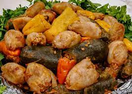

We're using jarred grape leaves in brine, no cooking needed. But before using in this recipe, remove them from the jar and rinse well. Let them drain in a colander while you prepare the stuffing.
The stuffing here is made of rice, cooked ground beef, and a few chopped fresh herbs (parsley, dill, and mint). First, rinse the rice and soak in water for 20 minutes (this is an important step, read on for more tips.) Then drain well. And while the rice is soaking cook the meat. Sautee finely chopped onions, add the meat and cook until fully browned. Be sure to drain any excess fat, then season the meat with kosher salt and pepper, allspice and cumin (so tasty!) Let cool. Cooked ground beef for stuffed grape leaves Combine the meat, rice, and fresh herbs. Add a generous drizzle of extra virgin olive oil (I used Private Reserve Greek EVOO) and toss to combine. Add pinch of kosher salt. Stuffing for grape leaves. rice, meat, and fresh herbs combined in a bowl
I like to start by preparing my cooking pot so that I can arrange the grape leaves as I stuff them. Lightly oil the pot with some extra virgin olive oil, then add a few layers of grape leaves and top with sliced tomatoes. This protects the stuffed grape leaves touching the bottom of the pot from scorching. Cooking pot with sliced tomatoes on top of layer of open grape leaves To stuff grape leaves, work one leaf at a time. Lay the leaf flat on a cutting board with the more textured side facing you. Cut off the stem. Take a heaping teaspoon of the rice stuffing mixture (a little bit less than 1 tablespoon) and place in the center of the leaf (close to where stem was). One grape leaf on cutting board with rice stuffing in middle Fold the sides over the filling and roll, keep tucking the left and right sides as you roll (think of this like you're rolling spring rolls or cigars.) Grape leaf stuffed and rolled Fold and roll grape leaves tightly enough but not too tight so the rice has room to expand as it cooks. A few fully rolled stuffed grape leaves on cutting board
Neatly arrange the grape leaves in rows, seam-side down, in your prepared pot, covering the circumference of the pot. Uncooked stuffed grape leaves assembled in cooking pots Then place a small plate inverted on top (this helps keep them in place while cooking.) Boil the water or broth and pour over the grape leaves, arriving at the top layer and somewhat covering (about 4 cups liquid, maybe a little more.) An inverted small plate is added on top of the assembled grape leaves
Cover the pot with its lid and cook over medium heat for 30 minutes until the liquid has been absorbed. Uncover and remove the plate, then pour juice of 2 lemons. Cover again with the lid (no need for the plate at this point), cook on low heat for 30 to 45 more minutes or until fully cooked. Let rest for 20 to 30 minutes, uncovered, before transferring to serving platter.
